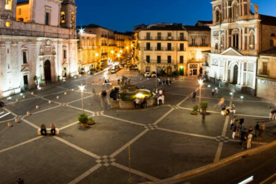
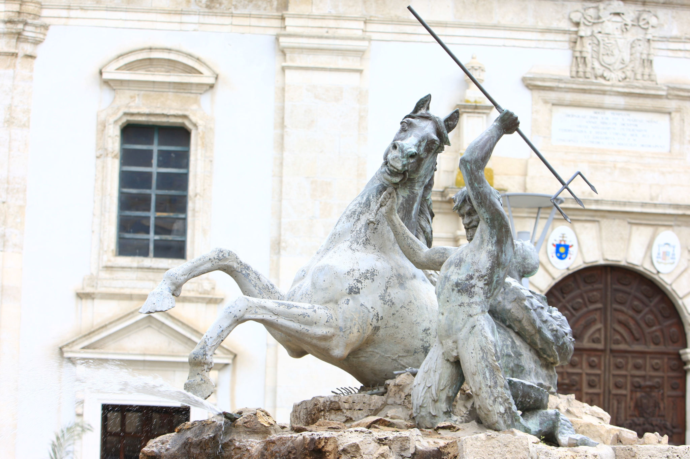
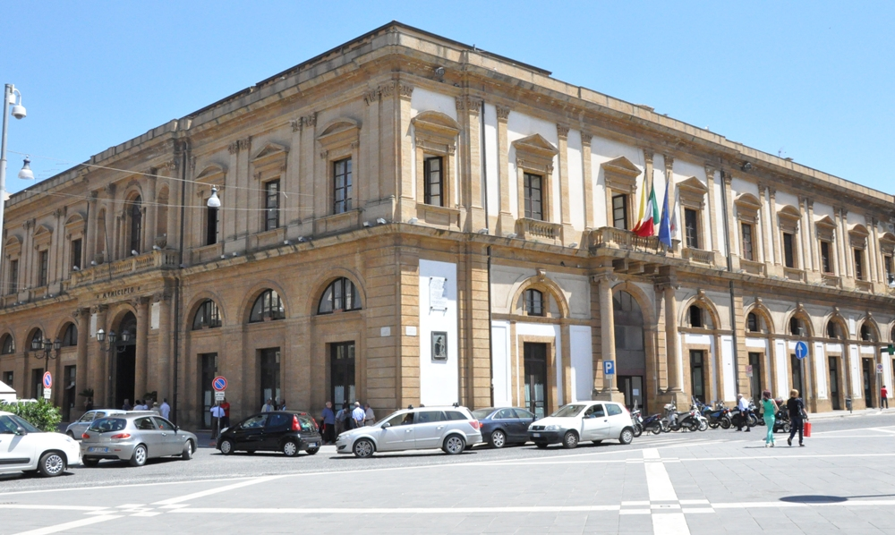

A OGNI PROVINCIA SICILIANA LA SUA PIAZZA

La piazza Garibaldi è la principale piazza del centro storico di Caltanissetta, nonché la più importante di tutta la città.
EDIFICI PRESENTI:
Sul lato orientale della piazza sorge l'imponente Cattedrale di Caltanissetta, sul lato occidentale si trova la Chiesa di San Sebastiano. Al nord della piazza si trova Palazzo del Carmine, ovvero la sede del comune. Al centro della piazza è situata la statua in bronzo della Fontana del Tritone

Teatro Luigi Pirandello

Palazzo del Carmine